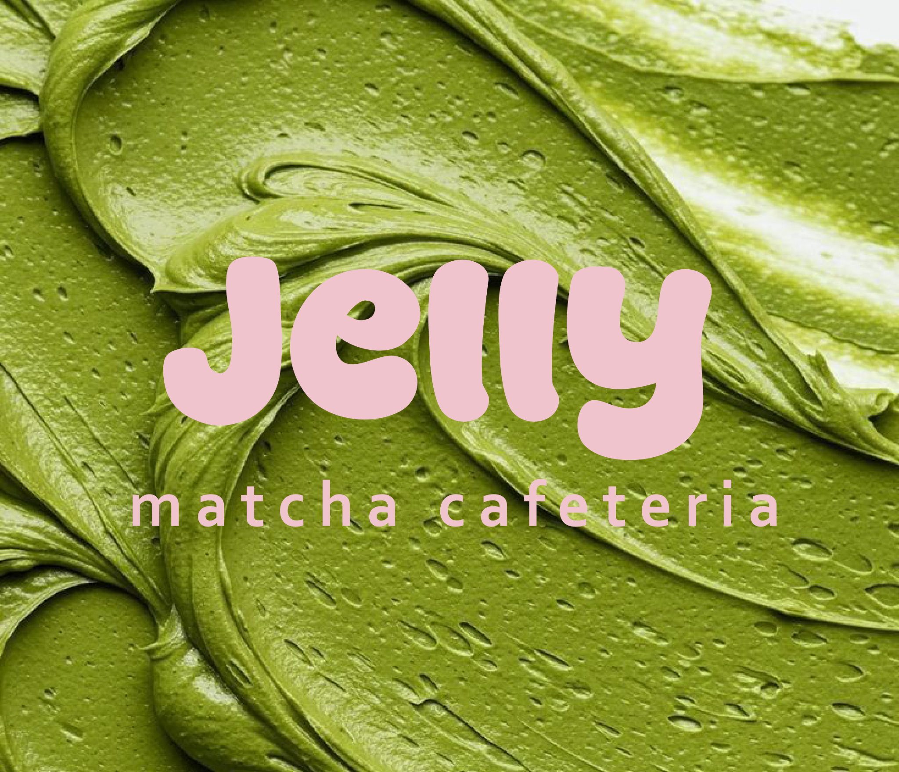
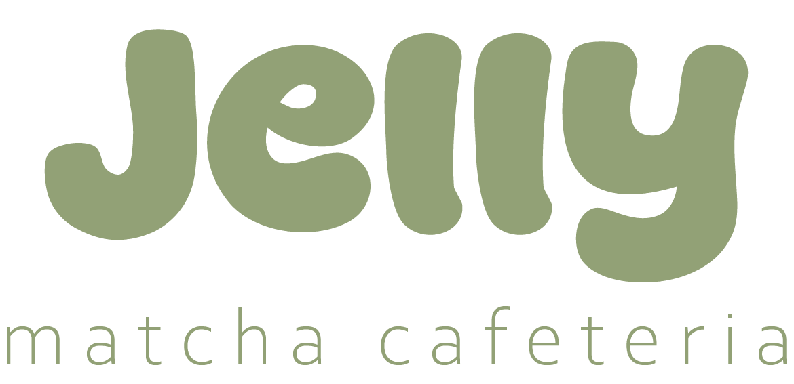
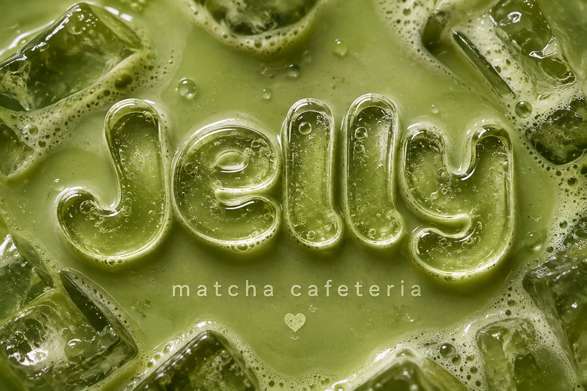
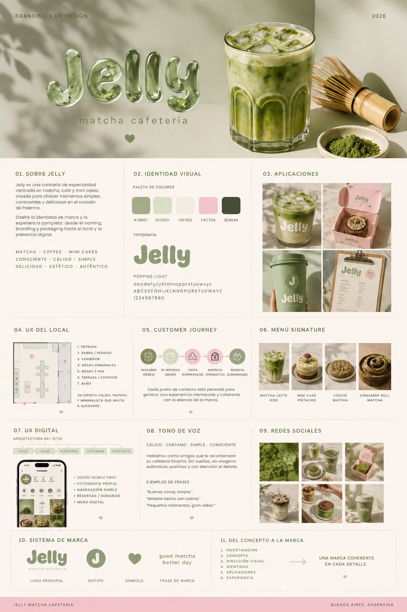
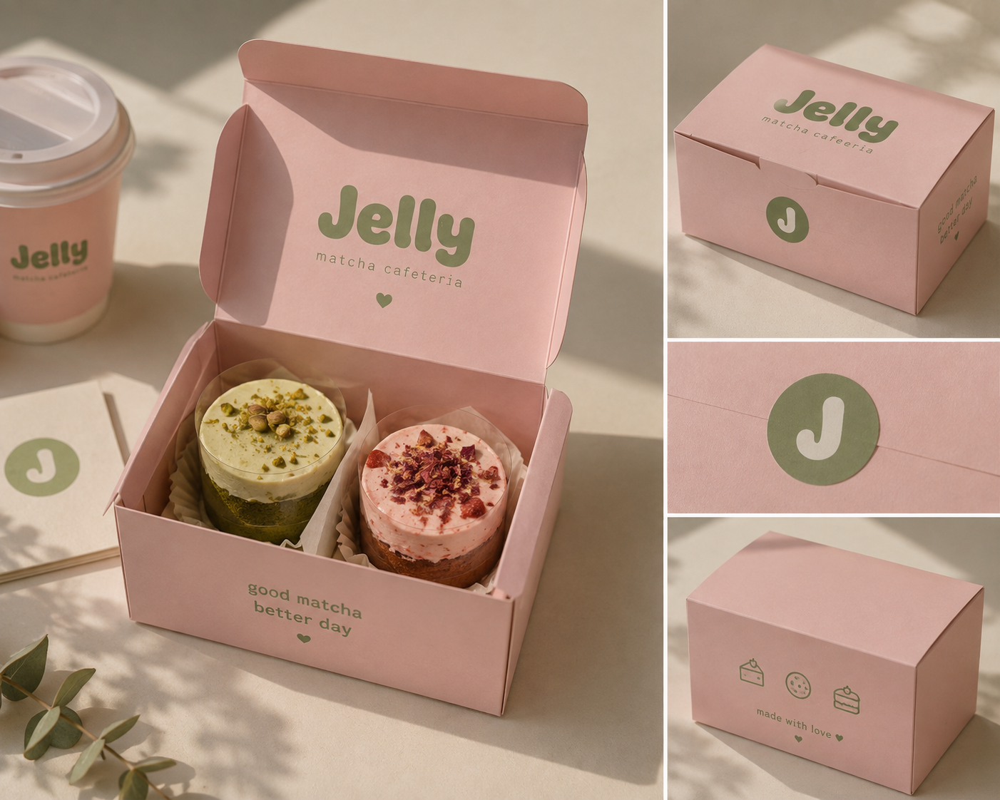
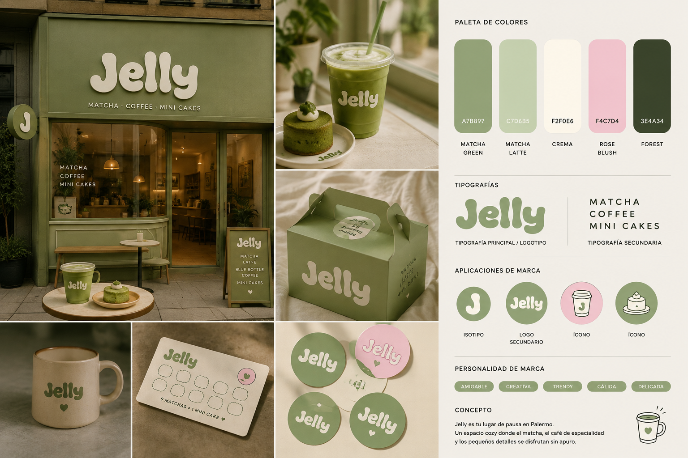

Matcha
El producto protagonista y el principal código visual de la marca.
01 / CASE STUDY
matcha cafeteria
Una cafetería conceptual de Palermo creada para convertir el momento de tomar un matcha, un café o algo dulce en una experiencia visual, sensorial y compartible.

THE IDEA
JELLY nace de la combinación entre matcha de especialidad, café, mini cakes y una experiencia de espacio pensada para quedarse.
El objetivo no era crear simplemente una cafetería “linda”, sino construir una marca con suficiente personalidad para convertirse en un lugar al que las personas quieran ir, fotografiar y recomendar.
03 / BRAND STRATEGY
El producto protagonista y el principal código visual de la marca.
Una propuesta contemporánea inspirada en la cultura del café de especialidad.
Mini cakes, cookies y detalles que convierten una visita cotidiana en un recuerdo.
JELLY no vende solamente bebidas y pastelería.
Vende pequeños momentos para disfrutar.
04 / USER EXPERIENCE
Instagram, TikTok, Pinterest y recomendación social como puertas de entrada.
Menú simple, productos signature y novedades temporales para reducir fricción al elegir.
Packaging, bebidas y espacio diseñados como puntos naturales de generación de contenido.
05 / VISUAL IDENTITY

El lettering orgánico y redondeado construye una personalidad cute, fresca, cálida, contemporánea y playful .
La J funciona como recurso independiente: isotipo, sello, sticker, avatar, patrón y elemento de packaging.
PALETA
06 / ART DIRECTION
La dirección fotográfica trabaja con macro photography, texturas, hielo, espuma, vidrio, cerámica, luz natural y sombras marcadas.


07 / PACKAGING
El packaging rosa funciona como una extensión de la identidad: protege, presenta, comunica y genera recuerdo.

09 / DIGITAL UX
Una imagen potente, el logo y un CTA claro para descubrir la marca.
Productos, fotografías y categorías ordenadas para una lectura rápida.
Ubicación, horarios y acceso directo a la experiencia física.

10 / FINAL BRAND SYSTEM
Logo + color + fotografía + packaging + producto + espacio + digital + redes construyen un sistema coherente y reconocible.
“Una marca creada para convertirse en un pequeño ritual dentro de Palermo.”
CHIARA ALEGRE — 2026